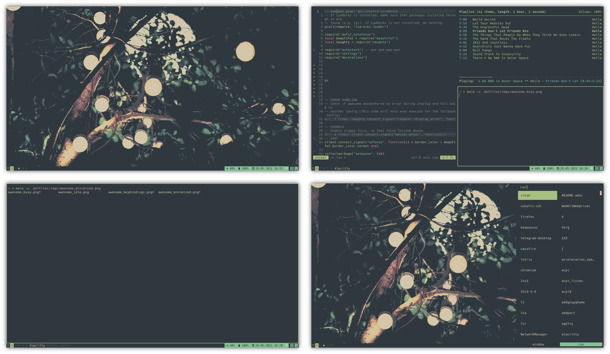

These are my awesome (actually horrible) dotfiles.
Screenshots are located in the imgs folder and shown in README’s.
This is a web version of the README. Go here for the dotfiles repo.
|
|
Changing stuff to make it work/fit your needs
You probably will and must change something in my dotfiles. I recommend looking through these dotfiles and changing things to fit your setup and/or needs if you want to use this. |
Table Of Contents
Things used
| alacritty |
Terminal |
| awesome |
Window manager |
| mpd |
Music daemon |
| ncmpcpp |
Music player |
| nvim |
Text editor |
| rofi |
Window switcher/Application launcher/Dmenu replacement |
| sxiv |
Image viewer |
| xdg dirs |
Some directory thingy |
| xinitrc |
Launch the window manager and some programs |
| xresources |
I only set colors in this |
| zathura |
Pdf reader |
| zsh (zshenv) |
Shell |
| scripts |
Scripts used by stuff |
| fonts |
Used by everything that has a font setting in here |
Dependencies
If something requires something, it will be written in it’s README or here.
Install